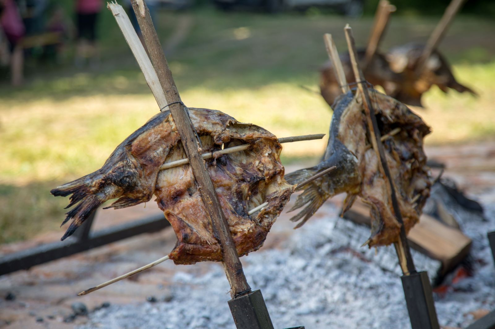

Carp on Fork

Description
Carp on Fork is traditional Croatian fish food. It is coming form Baranja county
where it is real atraction on metings named "fishijada". I have to admit that this
is the best served fish meal I have tried so far. I highly recommend it.
Carp on Fork is best made with wild carp, which have better meast with less fat.
Preparation is very short, but time needed to bake the fish is a little bit long.
Althought it takes long to bake the fish it is totaly worth it. The fish it self
can be served with any side dish you like the most. My favorite is bean salad.
Ingridients
- Carp 2.5kg
- Salt (or Vegeta)
- Finely ground sweet pepper
Steps
- Clean the fish and open it along the dorsal bone along its entire length,
including the carp head.
- Salt the open carp well, spread it lightly over the entire surface with
finely ground Baranja paprika.
- Spray (with a syringe) with oil and leave in the refrigerator to stand
for 12 hours.
- We put it in a wooden fork next to a very hot fire (embers) with
occasional turning.
- After 2.5 h, the carp is slowly squeezed out of the excess fat and takes
on a bright golden color. The carp is ready to be served.